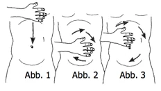

Bauchmassage
Entspannt, mit leicht angezogenen Knien auf dem Rücken liegend, wird sie mit der Handinnenfläche morgens im Bett ausgeführt. Mit dem Handteller der rechten Hand streicht man unter leichtem Druck vom Brustbein über den Magen bis zum Nabel. Danach die gleiche Bewegung mit der linken Hand - immer im Wechsel ca. 2 Minuten von oben nach unten streichen (Magenmassage siehe Abbildung 1).

Nun legt man die rechte Handinnenfläche auf den Nabel und führt im Uhrzeigersinn ca. 1 Minute eine sanfte, kreisförmige Massage um den Nabel herum aus (Dünndarmmassage siehe Abbildung 2). Zum Schluss wird die Massage ca. 2 Minuten auf den ganzen äußeren Bauchraum ausgedehnt (Dickdarmmassage siehe Abbildung 3). Bei schwächeren Personen kann zur Verstärkung des Druckes die linke Hand auf die rechte gelegt werden. Diese Bauchmassage soll ca. 2-3 Monate regelmäßig ausgeführt werden. Indikation: Verstopfung, Magen-Darm-Erkrankungen, Übergewicht. Kurz vor dem Einschlafen regt die Bewegung des Darmes seine Versorgung an und bringt entspannten Schlaf. Sonstiges: Viel Feigen essen, sie halten den Bauch weich (Hildegard von Bingen).